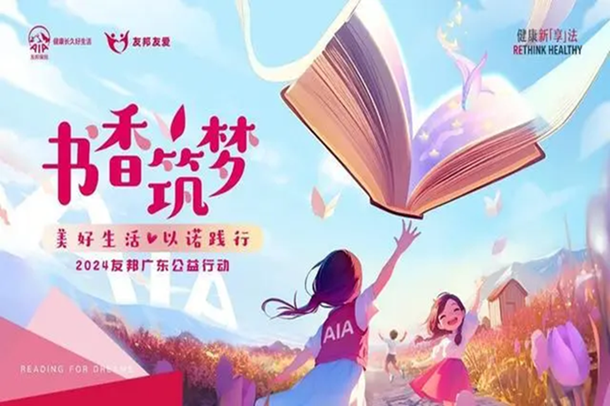

2024-9-20 18:46
为助力偏远学子实现阅读梦,提升闲置书籍的回收与再利用，友邦于2021年携手爱德基金会发起“友邦友爱·书香筑梦”项目。通过三年的积淀和摸索，“书香筑梦”逐渐形成了独具友邦特色的公益活动。
活动开展三年来，友邦人寿目前已在云南、四川、湖北、河南、广东、河北、安徽、贵州、山东九省设立了36座爱心图书室，还通过友邦线上平台携手卓越营销员和客户一起为爱心图书室捐书，累计捐赠的图书已超过46万册，惠及近2万名乡村学子。
去年，友邦广东与爱心人士携手并进，成功为四所广东乡村小学建立了爱心图书室，并将在新学期迈出爱心探访的步伐。
公司及控股子公司作为原告的案件合计金额为3.35亿元，占公司2023年度经审计的归属于上市公司股东净资产的34.79%；作为被告的案件合计金额为1.2亿元，占公司2023年度经审计的归属于上市公司股东净资产的12.50%。公司及控股子公司诉讼(仲裁)事项累计涉及金额4.55亿元，占公司2023年度经审计的归属于上市公司股东净资产的47.28%。
2024年“友邦友爱·书香筑梦”公益项目将重点落地广东。友邦人寿广东分公司将通过积极倡导全体营销员、员工、个人客户、企业客户和社会各界爱心人士通过线上线下的方式捐赠书籍，帮助乡村校园的学子透过书本看到更广阔的世界。
为方便线下收集爱心书本，友邦广东全省所有营业网点均设置爱心捐书点，迎接所有爱心人士前往捐书。9月新学期伊始，友邦广东也将携手更多公益伙伴开启公益探访之旅，前往学校了解爱心图书室的建成启用，与乡村学子们欢聚一堂。
2024年，友邦保险与国图创新成为文化合作伙伴，在“开卷友益，阅览山河”主题下，以国家图书馆典藏书本和各类活动为纽带，为不同年龄层、处于不同学习阶段的大众启迪更多想象。
参与本届“友邦友爱·书香筑梦”2024友邦广东公益行动的爱心人士不仅有机会获得一份公益伴手礼，这份特殊的礼物包含了一份友邦保险携手国图创新联合推荐的宝藏书单；同时，爱心人士还将有机会被邀请至线下“典籍文化读书会”、大师课等多元创意活动中， 参与传统文化的有趣体验。来自国家图书馆的专家将带领参与者走进国图古籍善本，一起参与体验线装书制作、雕版印刷以及古籍修复……友邦也将联合国图创新在广东培养首批“友邦保险典籍文化领读人”，未来将在广东各 地开展更多国图认证的研学体验，激发大众研究、分享和守护典籍的热情和力量，为全民读好书予以最专业的支持。
同时，“书香筑梦”线下捐书活动也将融入即将启动的友邦保险青少年足球训练营活动中，鼓励参与活动的家长及孩子将书籍带到现场进行捐赠，滋养青少年的公益意识，带动更多社会爱心力量加入公益行列，以推动乡村儿 童阅读体系发展，为乡村孩子们实现阅读梦想，为他们的成长带来更广阔的可能性。
“友邦友爱·书香筑梦”项目是友邦以实际行动践行企业社会责任与担当的重要体现，友邦将携手更多伙伴投身慈善事业，并通过实际行动传承中国文化，让更多人爱上阅读，助力更多中国家庭实现“健康长久好生活”。